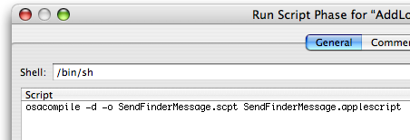

|
Note: Similar documentation on this subject for Carbon developers can be found in the technical Q&As: QA1026 and QA1111 SummaryNSAppleScript is a great tool for interapplication communication. It is a convenient way to pass parameters to an AppleScript script running inside your application. This Technical Note shows how to use NSAppleScript to load, compile, and execute scripts, and NSAppleEventDescriptor to invoke a handler in a loaded script. This Technical Note explains how to do the following:
Creating an NSAppleScriptWhen you create an instance of NSAppleScript object, you can use a URL to specify a script that can be in either text or compiled form:
or you can supply the script as a string by using:
Should an error occur when compiling or executing the script, the method Using NSAppleScript With an Embedded StringListing 1 shows how to use NSAppleScript to execute a complex script, embedded as an instance of NSString. If the script is successful, the code extracts information from the returned instance of NSAppleEventDescriptor. The executed script sets your application as a "Login Item" to the "Accounts" System Preferences. Listing 1: Using NSAppleScript with an embedded string.
- (IBAction)addLoginItem:(id)sender
{
NSDictionary* errorDict;
NSAppleEventDescriptor* returnDescriptor = NULL;
NSAppleScript* scriptObject = [[NSAppleScript alloc] initWithSource:
@"\
set app_path to path to me\n\
tell application \"System Events\"\n\
if \"AddLoginItem\" is not in (name of every login item) then\n\
make login item at end with properties {hidden:false, path:app_path}\n\
end if\n\
end tell"];
returnDescriptor = [scriptObject executeAndReturnError: &errorDict];
[scriptObject release];
if (returnDescriptor != NULL)
{
// successful execution
if (kAENullEvent != [returnDescriptor descriptorType])
{
// script returned an AppleScript result
if (cAEList == [returnDescriptor descriptorType])
{
// result is a list of other descriptors
}
else
{
// coerce the result to the appropriate ObjC type
}
}
}
else
{
// no script result, handle error here
}
}
Using NSAppleScript With a Script Inside The App's BundleThe following code in Listing 2 shows how your application can load an AppleScript script from its resources folder and send a text message to the Finder by displaying it in a dialog (the script is described below in Listing 3). It uses a series of NSAppleEventDescriptors to build the script parameters, determine the method name that's called and finally to create the AppleEvent for transmission to the Finder. Listing 2: Using NSAppleScript with a script inside the app's bundle.
- (IBAction)sendFinderEvent:(id)sender
{
// load the script from a resource by fetching its URL from within our bundle
NSString* path = [[NSBundle mainBundle] pathForResource:@"SendFinderMessage" ofType:@"scpt"];
if (path != nil)
{
NSURL* url = [NSURL fileURLWithPath:path];
if (url != nil)
{
NSDictionary* errors = [NSDictionary dictionary];
NSAppleScript* appleScript =
[[NSAppleScript alloc] initWithContentsOfURL:url error:&errors];
if (appleScript != nil)
{
// create the first parameter
NSAppleEventDescriptor* firstParameter =
[NSAppleEventDescriptor descriptorWithString:@"Message from my app."];
// create and populate the list of parameters (in our case just one)
NSAppleEventDescriptor* parameters = [NSAppleEventDescriptor listDescriptor];
[parameters insertDescriptor:firstParameter atIndex:1];
// create the AppleEvent target
ProcessSerialNumber psn = {0, kCurrentProcess};
NSAppleEventDescriptor* target =
[NSAppleEventDescriptor
descriptorWithDescriptorType:typeProcessSerialNumber
bytes:&psn
length:sizeof(ProcessSerialNumber)];
// create an NSAppleEventDescriptor with the script's method name to call,
// this is used for the script statement: "on show_message(user_message)"
// Note that the routine name must be in lower case.
NSAppleEventDescriptor* handler =
[NSAppleEventDescriptor descriptorWithString:
[@"show_message" lowercaseString]];
// create the event for an AppleScript subroutine,
// set the method name and the list of parameters
NSAppleEventDescriptor* event =
[NSAppleEventDescriptor appleEventWithEventClass:kASAppleScriptSuite
eventID:kASSubroutineEvent
targetDescriptor:target
returnID:kAutoGenerateReturnID
transactionID:kAnyTransactionID];
[event setParamDescriptor:handler forKeyword:keyASSubroutineName];
[event setParamDescriptor:parameters forKeyword:keyDirectObject];
// call the event in AppleScript
if (![appleScript executeAppleEvent:event error:&errors]);
{
// report any errors from 'errors'
}
[appleScript release];
}
else
{
// report any errors from 'errors'
}
}
}
}
Listing 3: The Contents of SendFinderMessage.scpt
on show_message(user_message)
tell application "Finder"
display dialog user_message
end tell
end show_message
IMPORTANT: For easier source code and project management, it is good practice to factor your AppleScript scripts as separate objects (i.e. separate compiled AppleScript files inside your app's resources folder). That way you won't need to change as much code if the scripting environment or object model for your target changes. Integrating Compiled Scripts Into Your Xcode ProjectSince the code in Listing 2 loads the script from within your application's Resources folder, you should provide this script in your Xcode project as a "compiled script". IMPORTANT: You may have noticed that Listing 3 is titled "SendFinderMessage.scpt". This is a compiled script with an extension ".scpt"; script text files are saved with ".applescript" extension. Compiled scripts are recommended for improved performance, especially if your scripts are large. Adding your script to your Xcode project can be done two ways: 1. Compile The Script Yourself When creating and editing your script using Script Editor you can save it in two formats: text or script. The "script" format means "compiled script". If you choose to save it as a compiled script then do the following with Xcode:
2. Have Xcode Compile The Script If you choose to store your script file as a "text" file, then you need Xcode to compile the script for you.
Figure 1: Run Script Build Phase  Sample CodeIf you wish to research a more extensive example of using AppleScript scripts inside your Cocoa application using the techniques described in this Technical Note, refer to the AttachAScript sample code project. Online DocumentationDocument Revision History
Posted: 2006-09-19 | ||||||||||
|